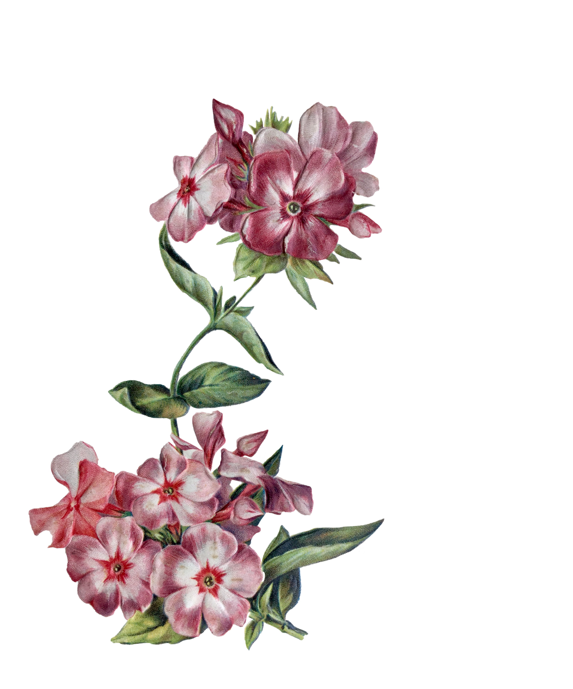

YOU ARE NOT ALONE
Finding support, understanding your options and connecting with people who care can make a difference throughout the cancer journey.
Whether you are navigating treatment or caring for someone you love, there is a place for you here.

FIND YOUR SUPPORT
Explore resources, guidance and support created for people navigating cancer and those who stand beside them.

FOR PATIENTS
Explore emotional support, treatment resources, financial assistance and opportunities to connect with others who understand your journey.
Explore patient support →FOR CAREGIVERS
Discover guidance for caregiving, emotional wellbeing, practical resources and communities that support those caring for a loved one.
Explore caregiver support →A REMINDER
Asking for help is not a sign of weakness. No one should have to navigate the cancer journey feeling unheard or alone.